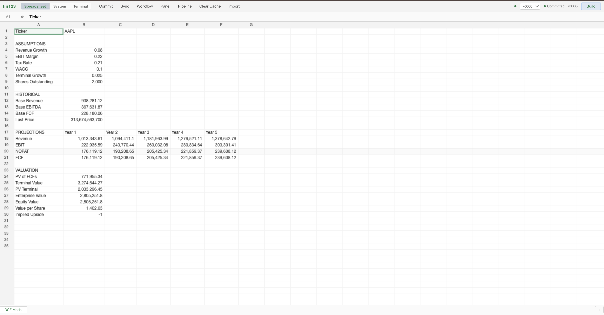
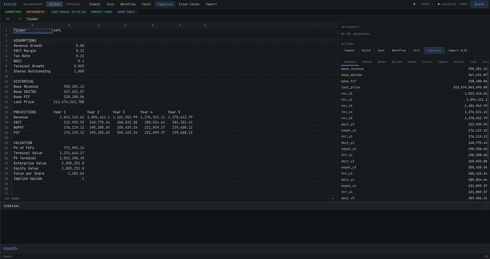
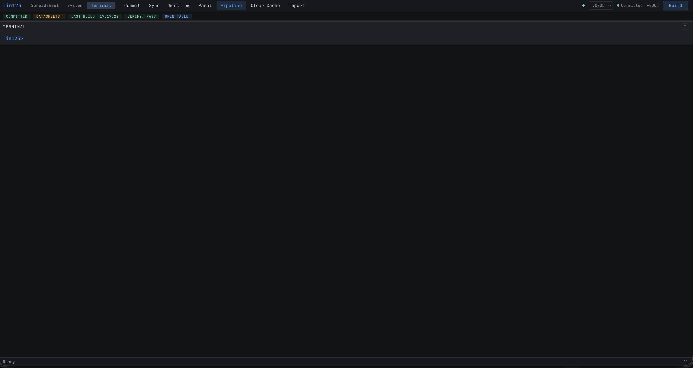
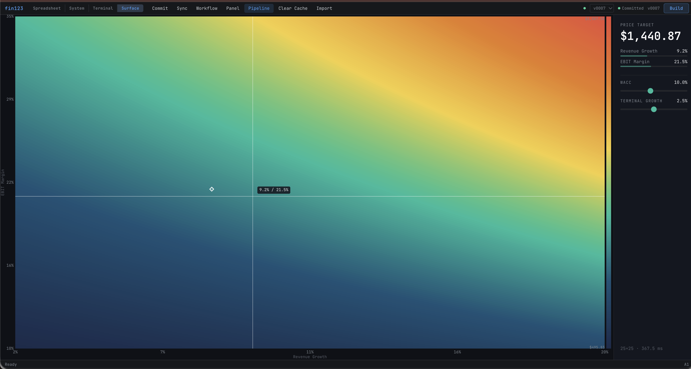

Run your spreadsheet like a program.
I spent 15 years building models in Excel, and another 15 years building systems in code.
- update models quickly as assumptions changed
- move across key drivers and run scenarios without waiting on data tables to recalculate
- handle huge recalculating spreadsheets without hanging
- keep versions of my work instead of losing them
- see what the model looked like when decisions were made
- run spreadsheets headlessly instead of rebuilding models in code
- scale workflows without stitched scripts and manual runs
- embed models without duplicating logic across data, model, and UI
- know every run was deterministic and auditable
- integrate LLMs as a controlled substrate, not a bolted-on copilot
The key insight was separating the data from the model from the UI.
The result is fin123: an operating system for spreadsheet models.
fin123> set revenue_growth = 0.08
fin123> commit
Build ID: 20260320_184211_run_1
Outputs: 12 scalars, 3 tables
fin123> scenario save base
fin123> set revenue_growth = 0.12
fin123> commit
fin123> scenario save bull
fin123> compare base bull
revenue_growth 0.08 -> 0.12
value_per_share 1,402.63 -> 2,163.51
fin123> sweep revenue_growth 0.04 0.06 0.08 0.10 0.12
fin123> grid revenue_growth 0.04 0.08 0.12 vs wacc 0.08 0.10 0.12 --output value_per_shareThe gap between a spreadsheet and a system
Most financial tools break in the space between an Excel model and a real system. The model works, but it cannot be versioned, reproduced, compared, or run at scale. The analyst builds it. The engineer reimplements it. Nobody trusts the handoff.
fin123 closes that gap. Research velocity meets research discipline: explore freely, keep what matters, compile to production. One model, one system, two perspectives.
Bottom line: Two products, one system
fin123-core is the spreadsheet I wanted as an analyst. fin123-pod is the application control I wanted as a coder. They are two ways of interacting with the same model and the same system.
fin123-core -- the analyst system
Flexibility, speed, and audit. Explore assumptions across surfaces, sweeps, and grids. Keep the states that matter. Compare outcomes. Return to prior work. Every build is deterministic, every result has a hash, and the full exploration path is preserved. No server required.
Open source -- Apache-2.0
fin123-pod -- the coder system
Reproducibility, headless execution, GitHub-like artifacts, embeddable spreadsheet objects, and LLMs kept under control. Compile a model once, run it anywhere -- no reimplementation in JS or Python. Scale workflows, publish to a versioned registry. Integrate LLMs as constrained compute nodes inside deterministic graphs -- not as autonomous agents. Ship to production with governance and release discipline.
Requires license
Features
Four modes, one runtime
Analyst mode for spreadsheeting. System mode for interactive model execution. Terminal mode for headless operation. Surface mode for exploring the model as a landscape.
Analyst
Excel-like spreadsheet surface for reviewing and editing models. Light theme, dense grid, formula bar, semantic cell formatting.

System
Spreadsheet and side panel together. Scalars, builds, research history -- with the model always visible.

Terminal
Full command surface for headless execution. Sweeps, grids, scenarios, and batch operations.

Surface
Explore the model as a 2D heatmap. Cursor moves, the Price Target updates live. Drag WACC -- the landscape deforms.

The system remembers what you explored
Change an assumption. Try a different one. Go back. fin123 keeps every state you visited -- not just the ones you committed. Bookmark the ones that matter. Return to prior work without rebuilding it. Branch to explore alternatives without losing the original path.
Working memory for model exploration. Not version control -- something lighter.
Structured exploration
A sweep runs the same model multiple times while varying one parameter. Each row is a real execution, not a recalculated cell. This is where analyst exploration becomes something the system can execute repeatedly and deterministically.
fin123> sweep revenue_growth 0.04 0.06 0.08 0.10 0.12
revenue_growth value_per_share enterprise_value Build ID
0.04 901.22 1,944,882 20260320_run_1
0.06 1,118.47 2,280,144 20260320_run_2
0.08 1,402.63 2,805,251 20260320_run_3
0.10 1,744.19 3,311,144 20260320_run_4
0.12 2,163.51 4,010,021 20260320_run_5In Excel, a Data Table recalculates cells. In fin123, a sweep runs the full model for each value. Every row has its own build, its own outputs, its own hash. A grid extends this to two parameters with matrix output. Every point is a state you can compare, keep, and return to.
This replaces Excel Data Tables with deterministic, auditable execution.
From exploration to production
This is where the analyst workflow becomes a system. Three steps. No code rewrite between them. For the analyst, exploration becomes something you can trust and revisit. For the coder, a model becomes something you can run, embed, and ship.
Spreadsheet (workbook.yaml)
|
| fin123 build
v
Build Outputs (scalars + tables)
|
| fin123 worksheet compile
v
Compiled Worksheet (immutable JSON, runs headlessly)
|
v
Applications / dashboards / batch jobsAuthor
Analysts define the model in a workbook: parameters, formulas, table plans, assertions. The model can be a DCF valuation, a revenue forecast, a credit model, a scenario analysis -- anything that would otherwise live in a spreadsheet. As they explore, fin123 keeps a working memory of every state -- so the path to a result is never lost.
Compile
fin123 build compiles the model into an immutable
worksheet with a deterministic content hash. The compiled worksheet
contains the calculation graph, evaluated outputs, display formatting,
flags, and a full audit trail.
Run
Applications run the compiled worksheet directly. The same compiled model runs in a dashboard, a batch job, a risk system, or an API. It runs headlessly, at scale, without anyone opening a spreadsheet. The model the analyst explored is the same model the engineer runs.
Every number traces back to a model
Commits, diffs, releases, and reproducible runs. Built in, not bolted on. Analysts need every number to be explainable. Engineers need every run to be reproducible.
Every model in fin123 has commits, diffs, releases, and reproducible runs. When a number is produced, it traces back to a specific model version, a specific set of inputs, and a specific content hash.
fin123 commit -> snapshot the model
fin123 build -> compile + hash the outputs
fin123 verify -> detect drift
fin123 release -> ship the compiled worksheetWhy this matters in finance
Regulators ask which model produced a number. Auditors ask whether the model changed between runs. Portfolio managers ask whether the forecast they approved is the same one running in production. fin123 answers all of these with a hash.
Benchmark
This is what happens when spreadsheet models become executable systems. Measured on real workloads. Not synthetic micro-benchmarks.
DCF operating model -- 66,000 rows, 10 tickers
| Operation | fin123 | Excel |
|---|---|---|
| Single build | 35 ms | 2-5 s |
| 20-scenario sweep | 1.4 s | 40-100 s |
| 5x5 sensitivity grid | 1.8 s | 30-120 s |
Row-scaling test -- 100K to 10M rows
| Rows | Runtime | Table eval | Memory |
|---|---|---|---|
| 100K | 16 ms | 3 ms | 113 MB |
| 1M | 94 ms | 15 ms | 382 MB |
| 10M | 1.05 s | 147 ms | 1,854 MB |
Sub-linear scaling. 100x rows, 67x runtime. No degradation through 10M rows.
Get started
Install
Standalone binaries (no Python required): macOS arm64 -- Windows x86_64
git clone https://github.com/reckoning-machines/fin123-core.git
cd fin123-core && pip install -e ".[dev]"
fin123 init my_dcf --template benchmark_dcf
fin123 ui my_dcfExamples
fin123-examples -- DCF valuation, earnings review worksheets, batch sensitivity sweeps.
Inside fin123-pod
Models are shared, versioned, governed, and runnable across systems. Extends fin123-core with Postgres-backed infrastructure.
Worksheet registry and governance
Teams publish compiled worksheets to a shared Postgres registry. Versions are reviewed and promoted through approval stages. Applications pull released versions from the registry. The application never reimplements the model logic.
Shared registry and runner
SQL sync pulls Postgres tables into local parquet caches with full audit trail.
Bloomberg and plugin connectors bring vendor data into the same governed
sync path. A Postgres-backed registry stores model versions, builds, and
releases. The headless runner executes models by
(model_id, model_version_id) with parameter overrides.
LLM workflow integration
LLMs operate as typed, constrained compute nodes inside a deterministic execution graph -- at the same level as the calc engine, not above it. Each LLM call is a single explicit node in a graph, not an autonomous agent. Inputs and outputs are schema-validated. No hidden loops, no implicit state.
build_base -> propose_sweep -> run_sweep -> interpret_results
(formula) (llm) (formula) (llm)The DCF sensitivity workflow builds a base model, uses an LLM to propose sweep values, executes the sweep deterministically in fin123, then uses an LLM to interpret results and produce a structural recommendation. Every step produces inspectable artifacts. The full run is persisted as a single JSON artifact with a transition record -- not narrative text.
This is what I wanted as a coder: to use LLMs without giving up control of the system.
fin123-pod runs versioned workflow graphs over deterministic models, with schema validation, policy enforcement, full provenance, and release discipline.